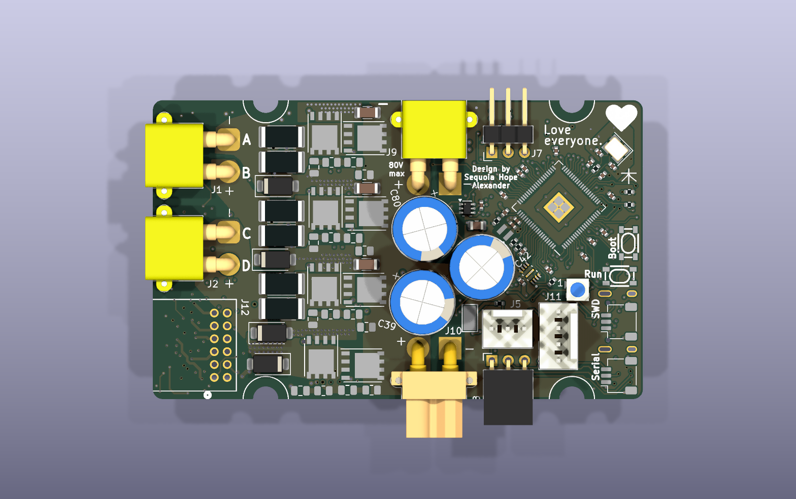
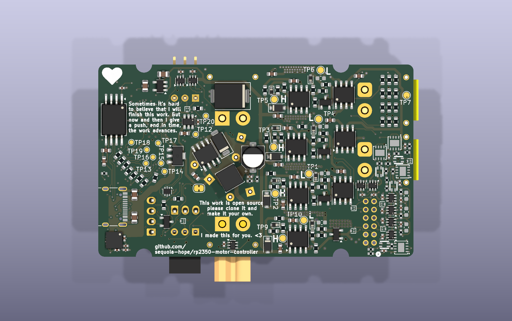
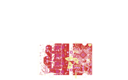

Rev A — The Board That Shipped
The fabricated design, pinned and verified against the gerbers actually sent out · tag rev-A-fab · fab export 2026-05-28
c6b9b75 (2026-05-26), now tagged rev-A-fab. The gerbers that were actually manufactured live in hardware/production/ — until 2026-08-30 that directory was gitignored, so the shipped board existed in exactly one untracked copy on one disk. It is now tracked. The mainline board file on branch rev-b-fixes is not this design: it carries 33 added parts, ~1000 extra track segments and a 1 mm wider outline, and is not fully routed.
1 · What shipped, and where it lives
| Thing | Where | Detail |
|---|---|---|
| Fab package | hardware/production/RP2350_Integrated_Driver_1.zip | 17 files: 6 copper layers, silk/mask/paste both sides, Edge.Cuts, PTH + NPTH drills & maps. Exported 2026-05-28 10:19. sha256 ddc0767d1ee1334dfa10a62f1e53c09607a79368606ddec4929adee6a5f0e5a8 |
| Assembly data | hardware/production/ | bom.csv, positions.csv (245 placed parts, DNP excluded), designators.csv, netlist.ipc |
| Prior fab runs | hardware/production/backups/ | 17 earlier exports, 2024-11-16 → 2026-05-28 |
| Source board | git show rev-A-fab:hardware/rp2350_driver.kicad_pcb | tag → c6b9b75 "remove incorrect max voltage silk", 2026-05-26 23:47 |
Getting the board file back
mkdir -p hardware/rev-A
git show rev-A-fab:hardware/rp2350_driver.kicad_pcb > hardware/rev-A/rp2350_driver.kicad_pcb
git show rev-A-fab:hardware/rp2350_driver.kicad_pro > hardware/rev-A/rp2350_driver.kicad_pro # DRC needs this
pcbnew hardware/rev-A/rp2350_driver.kicad_pcbhardware/rev-A/ is gitignored on purpose — it is fully reproducible from the tag, so it should never become a second source of truth.
2 · Proof the tag is the fab source
Two independent checks. First, every one of the 245 designators in the shipped positions.csv resolves to a footprint on the tagged board — nothing placed was missing from it.
Second, the gerbers were re-plotted from the tagged board with KiCad 9.0.8 and compared to the ones in the shipped zip, coordinate stream only (headers and aperture-table ordering ignored, since they carry timestamps and plotter-version detail):
| Layer | Coord lines | Result |
|---|---|---|
| Edge_Cuts | 15 | IDENTICAL |
| B_Cu | 5754 | IDENTICAL |
| In1_Cu | 13502 | IDENTICAL |
| In2_Cu | 2111 | IDENTICAL |
| In3_Cu | 2208 | IDENTICAL |
| In4_Cu | 13502 | IDENTICAL |
| F_Silkscreen | 4751 | IDENTICAL |
| B_Silkscreen | 7282 | IDENTICAL |
| F_Mask | 375 | IDENTICAL |
| B_Mask | 619 | IDENTICAL |
| F_Paste | 413 | IDENTICAL |
| B_Paste | 543 | IDENTICAL |
| F_Cu | 14391 | 61 vertices differ |
3 · The board

80V max silk near J9: c6b9b75 removed a duplicate 53V max label, not this one.

4 · Vitals, and what rev-B has changed since
| Measure | Rev A (shipped) | rev-b-fixes @ dc01bf7 | Delta |
|---|---|---|---|
| Footprints | 291 | 323 | +33 added, −1 removed |
| Track segments | 3984 | 4940 | +956 |
| Vias | 493 | 617 | +124 |
| Board outline | 76.0 × 46.4 mm | 77.0 × 46.4 mm | west edge 112.5 → 111.5 mm |
| Copper layers | 6 | 6 | — |
| Routing state | complete, manufactured | 54 airwires open | not fab-ready |
Added on rev-b-fixes: U30 U31 U32 U33 (encoder termination switches), Q6 (E-stop FET, DNP), JP2, D30 D31, R97–R115, C110–C115. Removed: C79.
The 1 mm outline extension came from 1dd84be (encoder-edge extension for the morph gate). It alone makes the current file a different physical part — it will not panelize or fit a rev-A enclosure.
hardware/rp2350_driver.kicad_pcb on this branch. Rev-B work has been landing in the mainline filename since 2026-08-08. The fab-ready design is the tag, and the fab-ready artwork is the zip.